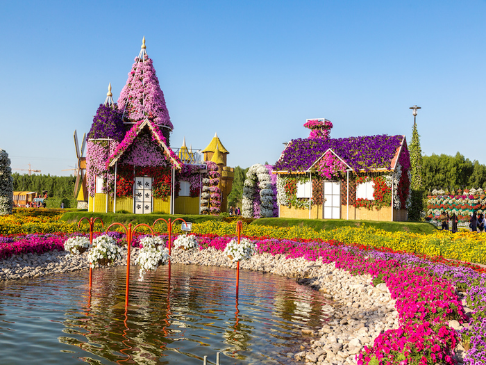

Indonesian for “secret,” the “Rahasia” villa offers a playground of privacy atop the resort’s coveted Spa Safari. The award-winning NihiSumba resort, a fifty-minute flight from Bali, has added yet another layer of romance to its collection of private accommodations, transforming its stand-alone “honeymoon villa” at the nearby Spa Safari™ Nihioka into an all-inclusive upgrade of secluded allure and flirtatious detail on the Edge Of Wildness™. The only villa situated within the Spa Safari’s boundaries of rolling rice fields and cliff top views, Rahasia allows guests to feel as if they have an entire resort unto themselves. With unobstructed views of the Indian Ocean, a symphony of crashing waves, a plunge pool, several private bales for dining or spa treatments, bush-cooked meals over an open fire, colorful You're eligible for a Genius discount at The Secret Villas! To save at this property, all you have to do is sign in. Offering luxury accommodation with a private pool, The Secret Villas is set in Seminyak. Petitenget Temple is 800 m away. Free WiFi is offered throughout the property and free private parking is available on site. All villas have an open-plan seating area, a spacious dining area and a well-equipped kitchen. Stylish bedrooms are fitted with air conditioning and a flat-screen satellite TV. The private bathroom is stocked with a hairdryer, slippers and free toiletries. The Secret Villas also has a concierge service to assist guest with currency exchange, tickets to attractions and tour desk. The staff can arrange car hire and airport shuttle at extra fees. Petitenget Beach is 1 km from The Secret Villas, while The Seminyak Square Shopping Mall is 1.1 km from the property. The nearest airport is Ngurah Rai International Airport, 8 km from the property. The Secret Villas has been welcoming Booking.com guests since 22 Jun 2015.
Boasting an indoor swimming pool, a garden, Secret Villa - Unique Experience offers accommodation in General Luna with free WiFi and mountain views. This villa provides air-conditioned accommodation with a balcony. The villa has 3 bedrooms, a kitchen with a fridge and a stovetop, and 2 bathrooms with a shower and free toiletries. Towels and bed linen are offered in the villa. Both a bicycle rental service and a car rental service are available at the villa. All villas have an open-plan seating area, a spacious dining area and a well-equipped kitchen. Stylish bedrooms are fitted with air conditioning and a flat-screen satellite TV. The private bathroom is stocked with a hairdryer, slippers and free toiletries. The Secret Villas also has a concierge service to assist guest with currency exchange, tickets to attractions and tour desk. The staff can arrange car hire and airport shuttle at extra fees.